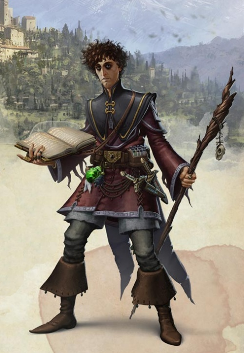

Magicien humain niv 3
Hommet Shaw
Magicien (nécromancie) 3 (900 PX)
Humain (h), neutre
Sage (apprenti magicien)
[ CARACTÉRISTIQUES ]
For 11 (+0) Dex 14 (+2) Con 16 (+3)
Int 16 (+3) Sag 10 (+0) Cha 10 (+0)
[ MAÎTRISES ]
Bonus de maîtrise +2
Sauvegardes Int +5, Sag +2
Compétences Arcanes +5, Histoire +5, Investigation +5, Médecine +2 (Perception passive 10)
Armes dague, fléchette, fronde, bâton, arbalète légère
Armures -
Langues commun, elfique, nain, infernal
[ COMBAT ]
pv 23 ; DV 3d6
Init +2 ; Vitesse 9 m
CA 12
Bâton. Corps à corps : +2 (1d6 contondant ; polyvalente (1d8))
Dague. Corps à corps : +4 (1d4+2 perforant ; finesse, légère, lancer (portée 6 m/18 m))
[ SORTS DE MAGICIEN ]
Caractéristique d'incantation Intelligence ; DD de sauvegarde des sorts 13 ; Bonus d'attaque des sorts +5
Sorts à préparer chaque jour 6 ; Emplacements 4 / 2
Sorts connus dans le grimoire (3) / 8 / 2
- Niv 0 : contact glacial, lumière, poigne électrique
- Niv 1 : armure de mage, bouclier, détection de la magie, disque flottant de Tenser, feuille morte, identification, projectile magique, rayon empoisonné
- Niv 2 : pas brumeux, rayon affaiblissant
[ CAPACITÉS & TRAITS ]
Récupération arcanique (1/jour, récupère [niv/2] emplacements - niv 5 max)
Nécromancien érudit
Sinistre moisson
Chercheur
[ ÉQUIPEMENT ]
Dague (2), focaliseur arcanique/bâton, grimoire, potion de soins, sac à dos, sac de couchage, gamelle, boite d'allume-feu, torche (5), rations/1 jour (10), gourde, corde en chanvre de 15 m, encre/bouteille, plume d’écriture, vêtements communs, petit couteau, lettre d'un collègue mort, bourse
Coût de l'équipement 159.47 po ; Poids de l'équipement 31.75 kg
30 po
Poids des pièces 0.3 kg
[ PERSONNAGE ]
Taille M / 1,78 m / 61 kg ; Âge 22 ans
Yeux noirs ; Peau pâle ; Cheveux bruns
Apparence Hommet Shaw est un humain de taille moyenne à la carrure malingre et aux épaules tombantes. Son visage allongé, austère et disgracieux est couronné d'une touffe de cheveux bruns bouclés en désordre. Les cernes de ses yeux d'encre sont assombries par un maquillage au charbon qui lui donne un air encore plus sinistre. Chose surprenante, sa voix de baryton est puissante et sa diction élégante, ce qui tranche totalement avec son physique.
Trait J'utilise de grands mots qui donnent l'impression d'une grande érudition.
Idéal Rien ne doit entraver les infinies possibilités inhérentes à toute existence.
Lien La non-vie est la clé pour déverrouiller le vaste potentiel du multivers... et tout ce dont j'ai besoin est cette clé.
Défaut La plupart des gens crient et courent quand ils voient un mort-vivant. Moi je m'arrête et je prends des notes sur son anatomie.
Passé du personnage Fils unique de Matthias et Janet, paysans au train de vie modeste, Hommet a grandi loin des grandes villes et n'a jamais été un enfant comme les autres. Alors que ses camarades jouaient à kobold-perché, lui capturait et disséquait de petits animaux, comme des grenouilles, des pigeons ou encore des écureuils. L'anatomie le passionnait, et il était émerveillé de voir comment les os, les muscles et les organes formaient un engrenage parfait et permettait à la vie de faire mouvoir les êtres de ce monde.
La vie. Hommet s'est longtemps demandé ce qu'elle était. Quelle était cette étincelle qui animait chacun de nous ? Comment fallait-il faire pour que ces cadavres bougent à nouveau ? C'était comme observer un moulin à vent alors qu'il ne souffle pas. Un engrenage parfait, privé de mouvement.
Ce sont ces interrogations qui ont amené Hommet à étudier la nécromancie. Enfant, on lui avait raconté de nombreuses histoires et légendes parlant de morts-vivants, d'abominations et autres monstruosités imaginés par la folie de certains magiciens. Il partit alors de son foyer pour étudier et rejoignit l'académie de magie de Waterdeep. Se passant très bien de la compagnie de ses collègues étudiants, il passait le plus clair de son temps à la bibliothèque, où il lut de nombreux ouvrages sur la nécromancie. Livres de sorts, de recherche, de comptes-rendus d'expériences, mais aussi d'histoire. Il savait bien que cela n'était pas naturel, et que la plupart du temps, cette magie était utilisée à de sombres desseins, et il ne voulait pas réitérer les erreurs du passé. Il ne voulait pas lever une armée afin de conquérir le continent, ni ouvrir un portail vers la Gisombre. Non, ce qu'il voulait, c'était permettre à ces engrenages de tourner à nouveau. Devenir une espèce de créateur, d'artiste même, qui serait capable d'insuffler la vie à ces engrenages inertes... et il s'est promis d'y arriver coûte que coûte.
Stat de WotC, histoire de yotus